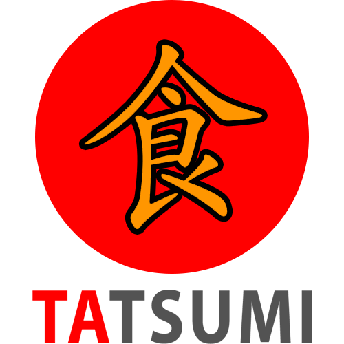
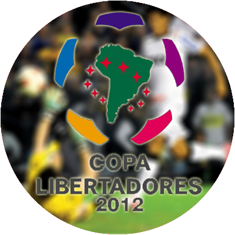
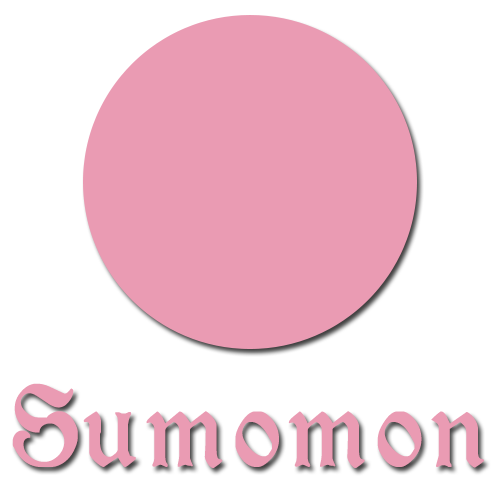
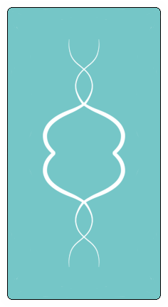

Thiago Yasue - Desenvolvimento WEB 2020 |
|||||
|---|---|---|---|---|---|
|
Estes foram os projetos que eu desenvolvi para a matéria de Desenvolvimento WEB para o curso de Jogos Digitais, Universidade de Mogi das Cruzes. |
|
TATSUMI RESTAURANT |
|
Bônus: Tatsumi Restaurant: Tanuki-san no suteki suteeki |
|
COPA LIBERTADORES 2012 |
|
SUMOMON |
|
A FALHA |
|

Projeto HTML/CSS + Jogo da Velha (JS) |

Jogo em Javascript |
|---|---|
|

Projeto Adobe XD |

Jogo ARG - A Falha |